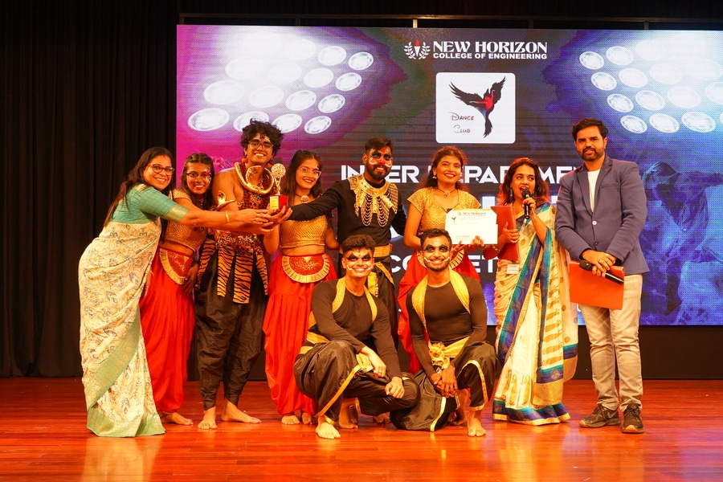
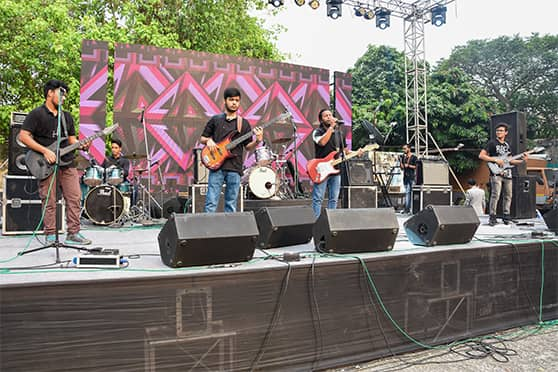
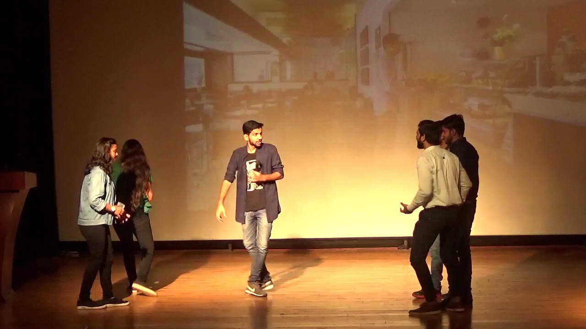
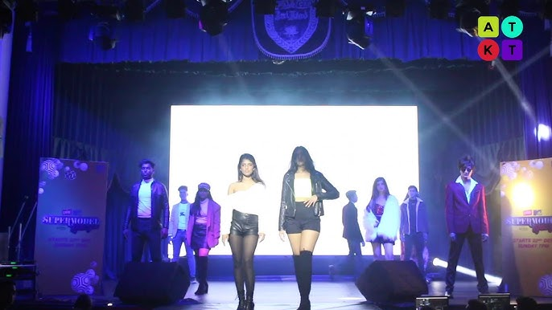

EXPLORE
|
Cultural Events
Celebrating Culture, Creativity, and Student Talent
Cultural events form an essential part of college life and play a major role in
bringing students together. These events provide a platform for students to
express creativity, preserve cultural traditions, and celebrate diversity.
Cultural programs are conducted during the Annual College Fest and on special
occasions such as cultural day, foundation day, and national festivals.
Major Cultural Activities Conducted
- Solo and group dance competitions
- Classical and western music performances
- Drama, skits, street plays, and mime shows
- Fashion shows representing traditional and modern themes
- Art, craft, and photography exhibitions
Highlights of Past Cultural Events
Below are some highlights from cultural events conducted in previous years.
|

|
Dance Competition – March 2025
Students performing various dance forms including classical, folk,
hip-hop, and contemporary styles.
|
|

|
Music & Singing Night – February 2025
Students showcasing classical and western music performances during
cultural week.
|
|

|
Drama & Skit Competition – January 2025
Performances focusing on social awareness themes and real-life issues.
|
|

|
Fashion Show – Traditional to Modern Theme
Students showcasing traditional and modern fashion styles with confidence.
|
Benefits of Cultural Events
- Enhances creativity and self-expression
- Builds confidence and stage presence
- Encourages teamwork and collaboration
- Promotes cultural awareness and unity
- Creates joyful and memorable college experiences
Cultural events are an important part of holistic education, helping students
grow emotionally, socially, and creatively.
|